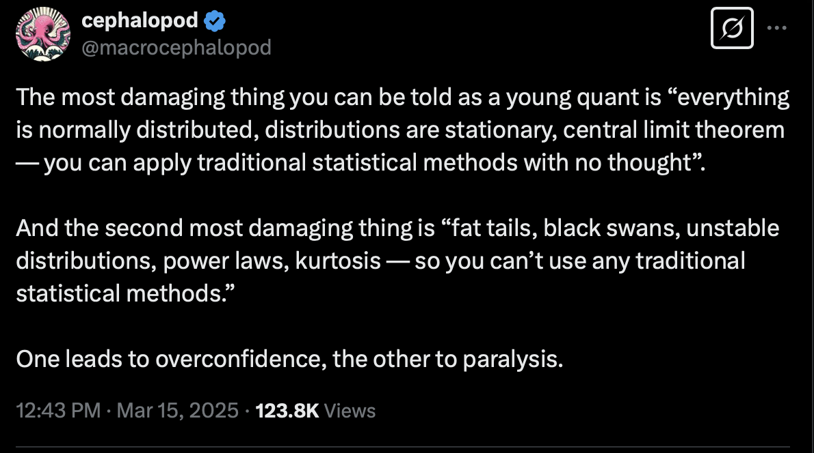

OLS regression in Python#
We’ll start with ordinary least squares (OLS) regression – the workhorse of econometrics and finance. We’ll use the statsmodels library to run regressions and interpret the output, just like you might using Excel’s Data Analysis Toolkit.
We’ll also cover indicator and categorical variables, which are essential for feature engineering in any regression or machine learning model.
This section will use our Zillow pricing error data as the main example.
Supervised learning and the machine learning process. Hull, Chapter 1.#
Chapter 1 of the Hull book starts our discussion of machine learning. Traditional econometrics is about explaining. Machine learning is about predicting. Roughly speaking.
We saw unsupervised learning when looking at clustering. Regression gets us into supervised learning. From Hull, Chapter 1:
Supervised learning is concerned with using data to make predictions. In the next section, we will show how a simple regression model can be used to predict salaries. This is an example of supervised learning. In Chapter 3, we will consider how a similar model can be used to predict house prices. We can distinguish between supervised learning models used to predict a variable that can take a continuum of values (such as an individual’s salary or the price of a house) and supervised learning models that are used for classification.
The data for supervised learning contains what are referred to as features and labels. The labels are the values of the target (e.g., the value of a house or whether a particular loan was repaid). The features are the variables from which the predictions about the target are made.
Prediction means that we’re going to approach things a bit differently. In particular, we are going to think carefully about in-sample vs. out-of-sample prediction. From Hull, Chapter 1:
When a data set is used for forecasting or determining a decision strategy, there is a danger that the machine learning model will work well for the data set but will not generalize well to other data. As statisticians have realized for a long time, it is important to test a model out-of-sample. By this we mean that the model should be tested on data that is different from the data used to determine the parameters of the model.
Our process is going to have us fit a model using training data. We might use some validation data to fine-tune the model. Finally, we evaluate the model using our testing data.
Supervised machine learning - the basic workflow#
A lot of the data that we’re using in these examples is already clean. There are no missing values. The columns are what we want. The features and target have been standardized.
In reality, things don’t work that way. You need to carefully look at your data. The regressions, the models, the machine learning is “easy”, in a sense. The tools are built-in. You don’t exactly have to do a lot of linear algebra or optimization math by hand.
The real work is in the details. It is your judgement and domain expertise that tells you what features you should be looking for. You need to know how your data were collected. You need the background knowledge to understand your task.
You’ll spend a lot of time cleaning and organizing your data in our labs and exams. In general, your workflow is going to be something like this:
Import your data. Is it a CSV or Excel file? Is it what you want? Do you need to remove any extra columns? Skip rows?
Keep the columns that your want. What’s your target, the thing you’re predicting? What features do you want to include?
Feature engineering time! Any missing values? Anything to clean? Check all of your columns. Are some text that you want numeric? Everything we’re doing here, for now, is with numeric values. Do you need to create new variables from existing ones? Combine variables into a new feature? Do you want to create dummy variables for categorical features? You’ll spend most of your time doing this.
Split your data. Once your data is clean, you can split it into training and testing samples. Hull will also sometimes split things into an intermediate validation sample. Most of your data will be in the training sample. You’ll hold out maybe 20% of your data for testing.
Standardize your data. Turn the actual numerical values for your targets and features into z-scores. A general recommendation is to standardize your training data and then use the means and standard deviations from your training data to standardize your testing data. More on this below.
Hull often provides data that is already cleaned, split, and standardized. But, we need to know how to do this. He mentions in the text that he standardizes the testing data using the means and standard deviations from the training data. But, we don’t see this when using data that is already cleaned up.
Train your model. Use your training data to fit your model. Use a validation data set or something like cross-fold validation to look for the optimal hyperparameter(s), if needed.
Predict your target. Take the fitted model that uses the optimal hyperparameter(s) and use it to fit your testing data. Get predicted values and compare to the actual y targets in your testing sample.
Evaluate your model. How good a job did it do? See Hull for more on the numbers you might use to evaluate a model. I like to make a scatter plot of actual vs. predicted values.
What is regression? Hull, Chapter 3.#
We are going to run a bunch of regressions. You’ve seen the basics in other classes. However, we should make sure that we really understand what we’re doing. At its core, linear regression attempts to find the best-fitting line (or hyperplane in multiple dimensions) through a set of data points, minimizing the discrepancy between the observed values and the values predicted by the model.
Note
Chapters 3.1 and 3.2 of Hull cover regression basics and some of the algebra, with an example for housing prices. If you are doing anything even remotely quant or data science or analytics for a job, you should know regression really, really well. Be able to derive these equations.
This is an excellent overview: https://aeturrell.github.io/coding-for-economists/econmt-regression.html. Some important concepts covered:
Notation and assumptions behind regression.
Using the
pyfixestpackage. We’ll use a different package below, but this one is nice.Standard errors. They determine the significance level of your coefficients and often need to be fixed.
Fixed effects and categorical variables.
Transforming your variables with things like logs. Our textbook talks about this when discussing defining our features.
Causality with things like instrumental variables. Beyond our scope, but businesses are interested in these things. They want to run experiments to get at what happens to Y if we do X? This is a causal question, but pure statistics.
I also like this section on regression diagnostics: https://aeturrell.github.io/coding-for-economists/econmt-diagnostics.html. Does your model do a good job explaining the relationship that you’re interested in?
Back to the basics. The population linear regression model is written as:
or, in matrix form:
where:
\(\mathbf{y}\) is an \(n \times 1\) vector of the dependent variable, \(\mathbf{X}\) is an \(n \times (k+1)\) matrix of regressors (including a column of ones for the intercept), \(\boldsymbol{\beta}\) is a \((k+1) \times 1\) vector of coefficients, \(\mathbf{u}\) is an \(n \times 1\) vector of error terms.
The goal of ordinary least squares (OLS) is to estimate \(\boldsymbol{\beta}\) such that the sum of squared residuals \(\mathbf{u}{\prime}\mathbf{u}\) is minimized. In short, regression is an optimization problem (like you would in calculus) expressed with some linear algebra (so, vectors and matrices).
The OLS estimator is derived as:
This estimator gives the “best” linear approximation of the relationship between the variables under certain conditions. The \(\prime\) means the transpose of the matrix. The \({-1}\) is a matrix inverse. You probably saw all of this in high school math.
Assumptions and the Gauss-Markov Theorem#
The validity of OLS relies on several classical assumptions (often called the Gauss-Markov assumptions):
Linearity: The model is linear in parameters.
Random Sampling: The data is an i.i.d. sample from the population.
No Perfect Multicollinearity: No regressor is a perfect linear combination of others.
Zero Conditional Mean: \(\mathbb{E}[u_i | \mathbf{X}] = 0\) , implying regressors are exogenous.
Homoskedasticity: \(\mathbb{E}[u_i^2 | \mathbf{X}] = \sigma^2\), i.e., constant variance of the error term.
Under these assumptions, the Gauss-Markov Theorem states that the OLS estimator \(\hat{\boldsymbol{\beta}}\) is the Best Linear Unbiased Estimator (BLUE). This means that among all linear and unbiased estimators, OLS has the smallest variance. It’s the best!
These assumptions are actually pretty general. OLS works in all kinds of settings, with all kinds of data. It’s actually kind of amazing that something this simple is used absolutely everywhere.

Fig. 89 You want to understand when some tools are appropriate. But, don’t over-complicate things.#
But, you still want to understand the assumptions. OLS isn’t magic. It’s just some math. OLS doesn’t tell you if a relationship is causal, that one of the X variables causes the Y variable. For all OLS cares, you could switch the Y and X variables around and the math would still work. It’s really just telling you conditional correlations.
For causality, you need experimental design. That’s beyond the scope of what we’re doing. Take econometrics.
Interpreting coefficients and regression output#
When you run a regression, especially in Python with statsmodels, you’ll get a table of output. Here’s how to make sense of the key parts:
Coefficients: These are your \(\hat{\beta}_j\) values. They measure the estimated effect of each feature on the outcome.
Standard Errors: These measure the uncertainty around each coefficient estimate. Smaller values mean more precise estimates.
t-Statistic: Calculated as \(\hat{\beta}_j / \text{SE}(\hat{\beta}_j)\). A large absolute value (e.g. greater than 1.96) suggests the coefficient is likely nonzero.
p-Value: Tells you whether the coefficient is statistically significant. Typically, a p-value < 0.05 is considered evidence against the null (that the coefficient is 0).
R-squared: The proportion of variance in the dependent variable explained by the model. Closer to 1 means better fit — but beware of overfitting.
Adjusted R-squared: Like R² but penalizes for too many variables. Useful for comparing models.
F-statistic: Tests whether all the regression coefficients are jointly equal to zero.
Intuitively, each coefficient \(\beta_j\) represents the partial correlation of the corresponding explanatory variable \(x_j\) on the dependent variable \(y\) , holding all other variables constant. In algebraic terms, in the linear model:
\(\frac{\partial y_i}{\partial x_{ij}} = \beta_j\)
So if \(\beta_2 = 5\), then a one-unit increase in \(x_2\) is associated with a 5-unit increase in the expected value of \(y\) , assuming other variables are held constant.
Fig. 90 Regression is great.#
In practice, it’s important to consider:
The sign: Is the relationship positive or negative?
The magnitude: Is the change meaningful in the context of the units?
The statistical significance: Is the estimated effect distinguishable from zero?
Statistical significance is usually assessed using the t-statistic and p-value, which tell us how confident we are that the effect is real (i.e., unlikely due to chance under the null hypothesis that \(\beta_j = 0\)).
Once you’ve estimated your regression, it’s good practice to check how well the model is doing. One way to do this is by examining the residuals — the differences between the actual and predicted values:
\(\hat{u}_i = y_i - \hat{y}_i\)
I’ll do something like this below, when I compare the actual vs. predicted values.
Residuals should:
Be randomly scattered (no pattern!) when plotted against fitted values or individual predictors.
Have roughly constant variance (homoskedasticity).
Be centered around zero.
If these aren’t true, your model may be missing something — a nonlinear pattern, a missing variable, or a transformation (like taking logs) might help.
Chapter 10.1 discusses how to interpret our results. Traditionally, machine learning hasn’t been as interested in interpreting the model - we just want predicted values! However, as machine learning, statistics, econometrics, and specific domain knowledge (i.e. finance) mix, we are becoming more interested in exactly how to interpret our results.
As the text notes, you can’t tell a loan applicant that they got rejected because “the algo said so”! You need to know why. This also gets into biases in our data. Is your model doing something illegal and/or unethical?
From the Hull text:
The weight, \(b_j\), can be interpreted as the sensitivity of the prediction to the value of the feature \(j\). If the value of feature \(j\) increases by an amount \(u\) with all other features remaining the same, the value of the target increases by \(b_{j,u}\). In the case of categorical features that are 1 or 0, the weight gives the impact on a prediction of the target of changing the category of the feature when all other features are kept the same.
The bias, \(a\), is a little more difficult to interpret. It is the value of the target if all the feature values are zero. However, feature values of zero make no sense in many situations.
The text suggests setting all of the X features at the average value and then adding the intercept, \(a\). This \(a^*\) value is the predicted y if all features are at their mean.
Note that to do this, you should use the model results with the unscaled data. From the text:
To improve interpretability, the Z-score scaling used for Table 3.7 has been reversed in Table 10.1. (It will be recalled that scaling was necessary for Lasso.) This means that the feature weights in Table 3.7 are divided by the standard deviation of the feature and multiplied by the standard deviation of the house price to get the feature weights in Table 10.1.
As mentioned above, going back and forth between scaled and unscaled features is easier if you just let sklearn do it for you.
This is also a nice summary of how to interpret regression results.
Regression and common interview questions#
If you are interviewing for any kind of data science or analytics job, you should be able to answer some basic questions. You might know the ones for careers like banking (e.g. Walk me through a DCF). There are, of course, the important behavioral questions. Here are some common questions for more data-oriented jobs.
What is linear regression? How does it work?
What is the difference between correlation and causation?
What is multicollinearity? How do you detect it?
What is heteroskedasticity? How do you detect it?
What is the difference between a linear and a logistic regression?
What is the difference between LASSO and Ridge regression?
What is the difference between supervised and unsupervised learning?
How do you interpret the coefficients in a regression model?
What is the purpose of regularization in regression models?
What is the purpose of cross-validation in regression models?
What is the purpose of feature selection in regression models?
We touch on all of these topics below.
statsmodel vs. sklearn#
I run linear regressions (OLS) two ways below. I first use statsmodels. This method and output looks like “traditional” regression analysis. You specify the y-variable, the x-variables you want to include, and get a nice table with output. Very much like what you’d get using Excel and the Data Analysis Toolkit.
The Hull textbook uses sklearn. This library is focused on machine learning. The set-up is going to look a lot different. This library will help you process your data, define features, and split it up into training and test data sets. Crucially, you’ll want to end up with X and y data frames that contain features and target values that you are trying to predict, respectively.
Two libraries, two ways to do regression. The Hull textbook uses sklearn for the ridge, LASSO, and Elastic Net models.
You can read more about the statsmodels library on their help page. Here’s linear regression from the sklearn library.
Example using Zillow pricing errors#
Let’s start with a typical regression and output. So, no prediction. Let’s run a regression like we might using the Data Analysis Toolkit in Excel. We’ll look at the output and interpret the coefficients and statistical significance.
I’ll be using our Zillow pricing error data in this example. The statsmodels library will let us run the regressions and give us nicely formatted output.
import numpy as np
import scipy.stats as st
import matplotlib.pyplot as plt
import pandas as pd
import seaborn as sns
import statsmodels.api as sm
import statsmodels.formula.api as smf
from sklearn.metrics import mean_squared_error as mse
from sklearn.metrics import r2_score as r2
from sklearn.linear_model import LinearRegression
# Importing Ridge
from sklearn.linear_model import Ridge
# Import Lasso
from sklearn.linear_model import Lasso
# Import Elastic Net
from sklearn.linear_model import ElasticNet
# Import train_test_split
from sklearn.model_selection import train_test_split
# Import StandardScaler
from sklearn.preprocessing import StandardScaler
# Import GridSearchCV
from sklearn.model_selection import GridSearchCV
#Need for AIC/BIC cross validation example
from sklearn.linear_model import LassoLarsIC
from sklearn.pipeline import make_pipeline
from sklearn.linear_model import LassoCV
from sklearn.model_selection import RepeatedKFold
# Include this to have plots show up in your Jupyter notebook.
%matplotlib inline
pd.options.display.max_columns = None
housing = pd.read_csv('https://raw.githubusercontent.com/aaiken1/fin-data-analysis-python/main/data/properties_2016_sample10_1.csv')
pricing = pd.read_csv('https://raw.githubusercontent.com/aaiken1/fin-data-analysis-python/main/data/train_2016_v2.csv')
zillow_data = pd.merge(housing, pricing, how='inner', on='parcelid')
zillow_data['transactiondate'] = pd.to_datetime(zillow_data['transactiondate'], format='%Y-%m-%d')
/var/folders/kx/y8vj3n6n5kq_d74vj24jsnh40000gn/T/ipykernel_67402/4278326240.py:1: DtypeWarning: Columns (0: fireplaceflag) have mixed types. Specify dtype option on import or set low_memory=False.
housing = pd.read_csv('https://raw.githubusercontent.com/aaiken1/fin-data-analysis-python/main/data/properties_2016_sample10_1.csv')
zillow_data.describe()
| parcelid | airconditioningtypeid | architecturalstyletypeid | basementsqft | bathroomcnt | bedroomcnt | buildingclasstypeid | buildingqualitytypeid | calculatedbathnbr | decktypeid | finishedfloor1squarefeet | calculatedfinishedsquarefeet | finishedsquarefeet12 | finishedsquarefeet13 | finishedsquarefeet15 | finishedsquarefeet50 | finishedsquarefeet6 | fips | fireplacecnt | fullbathcnt | garagecarcnt | garagetotalsqft | heatingorsystemtypeid | latitude | longitude | lotsizesquarefeet | poolcnt | poolsizesum | pooltypeid7 | propertylandusetypeid | rawcensustractandblock | regionidcity | regionidcounty | regionidneighborhood | regionidzip | roomcnt | storytypeid | threequarterbathnbr | typeconstructiontypeid | unitcnt | yardbuildingsqft17 | yardbuildingsqft26 | yearbuilt | numberofstories | structuretaxvaluedollarcnt | taxvaluedollarcnt | assessmentyear | landtaxvaluedollarcnt | taxamount | taxdelinquencyyear | censustractandblock | logerror | transactiondate | |
|---|---|---|---|---|---|---|---|---|---|---|---|---|---|---|---|---|---|---|---|---|---|---|---|---|---|---|---|---|---|---|---|---|---|---|---|---|---|---|---|---|---|---|---|---|---|---|---|---|---|---|---|---|---|
| count | 9.071000e+03 | 2871.000000 | 0.0 | 5.00000 | 9071.000000 | 9071.000000 | 3.0 | 5694.000000 | 8948.000000 | 64.0 | 695.000000 | 9001.000000 | 8612.000000 | 3.000000 | 337.000000 | 695.000000 | 49.000000 | 9071.000000 | 993.000000 | 8948.000000 | 3076.000000 | 3076.000000 | 5574.000000 | 9.071000e+03 | 9.071000e+03 | 8.020000e+03 | 1810.0 | 99.000000 | 1685.0 | 9071.000000 | 9.071000e+03 | 8912.000000 | 9071.000000 | 3601.000000 | 9070.000000 | 9071.000000 | 5.0 | 1208.000000 | 0.0 | 5794.000000 | 280.000000 | 7.000000 | 8991.000000 | 2138.000000 | 9.022000e+03 | 9.071000e+03 | 9071.0 | 9.071000e+03 | 9071.000000 | 168.000000 | 9.009000e+03 | 9071.000000 | 9071 |
| mean | 1.298764e+07 | 1.838036 | NaN | 516.00000 | 2.266233 | 3.013670 | 4.0 | 5.572708 | 2.296826 | 66.0 | 1348.981295 | 1767.239307 | 1740.108918 | 1408.000000 | 2393.350148 | 1368.942446 | 2251.428571 | 6049.128982 | 1.197382 | 2.228990 | 1.800715 | 342.415475 | 3.909760 | 3.400230e+07 | -1.181977e+08 | 3.150909e+04 | 1.0 | 520.424242 | 1.0 | 261.835520 | 6.049436e+07 | 33944.006845 | 2511.879727 | 193520.398223 | 96547.689195 | 1.531364 | 7.0 | 1.004967 | NaN | 1.104764 | 290.335714 | 496.714286 | 1968.380047 | 1.428438 | 1.768673e+05 | 4.523049e+05 | 2015.0 | 2.763930e+05 | 5906.696988 | 13.327381 | 6.049368e+13 | 0.010703 | 2016-06-10 19:52:40.268989 |
| min | 1.071186e+07 | 1.000000 | NaN | 162.00000 | 0.000000 | 0.000000 | 4.0 | 1.000000 | 1.000000 | 66.0 | 49.000000 | 214.000000 | 214.000000 | 1344.000000 | 716.000000 | 49.000000 | 438.000000 | 6037.000000 | 1.000000 | 1.000000 | 0.000000 | 0.000000 | 1.000000 | 3.334420e+07 | -1.194143e+08 | 4.350000e+02 | 1.0 | 207.000000 | 1.0 | 31.000000 | 6.037101e+07 | 3491.000000 | 1286.000000 | 6952.000000 | 95982.000000 | 0.000000 | 7.0 | 1.000000 | NaN | 1.000000 | 41.000000 | 37.000000 | 1885.000000 | 1.000000 | 1.516000e+03 | 7.837000e+03 | 2015.0 | 2.178000e+03 | 96.740000 | 7.000000 | 6.037101e+13 | -2.365000 | 2016-01-01 00:00:00 |
| 25% | 1.157119e+07 | 1.000000 | NaN | 485.00000 | 2.000000 | 2.000000 | 4.0 | 4.000000 | 2.000000 | 66.0 | 938.000000 | 1187.000000 | 1173.000000 | 1392.000000 | 1668.000000 | 938.000000 | 1009.000000 | 6037.000000 | 1.000000 | 2.000000 | 2.000000 | 0.000000 | 2.000000 | 3.380545e+07 | -1.184080e+08 | 5.746500e+03 | 1.0 | 435.000000 | 1.0 | 261.000000 | 6.037400e+07 | 12447.000000 | 1286.000000 | 46736.000000 | 96193.000000 | 0.000000 | 7.0 | 1.000000 | NaN | 1.000000 | 175.750000 | 110.500000 | 1953.000000 | 1.000000 | 8.028525e+04 | 1.926595e+05 | 2015.0 | 8.060700e+04 | 2828.645000 | 13.000000 | 6.037400e+13 | -0.025300 | 2016-04-01 00:00:00 |
| 50% | 1.259048e+07 | 1.000000 | NaN | 515.00000 | 2.000000 | 3.000000 | 4.0 | 7.000000 | 2.000000 | 66.0 | 1249.000000 | 1539.000000 | 1513.000000 | 1440.000000 | 2157.000000 | 1257.000000 | 1835.000000 | 6037.000000 | 1.000000 | 2.000000 | 2.000000 | 430.000000 | 2.000000 | 3.401408e+07 | -1.181670e+08 | 7.200000e+03 | 1.0 | 504.000000 | 1.0 | 261.000000 | 6.037621e+07 | 25218.000000 | 3101.000000 | 118887.000000 | 96401.000000 | 0.000000 | 7.0 | 1.000000 | NaN | 1.000000 | 248.500000 | 268.000000 | 1969.000000 | 1.000000 | 1.315530e+05 | 3.416920e+05 | 2015.0 | 1.910000e+05 | 4521.580000 | 14.000000 | 6.037621e+13 | 0.007000 | 2016-06-14 00:00:00 |
| 75% | 1.423676e+07 | 1.000000 | NaN | 616.00000 | 3.000000 | 4.000000 | 4.0 | 7.000000 | 3.000000 | 66.0 | 1612.000000 | 2090.000000 | 2055.000000 | 1440.000000 | 2806.000000 | 1617.500000 | 3732.000000 | 6059.000000 | 1.000000 | 3.000000 | 2.000000 | 484.000000 | 7.000000 | 3.417153e+07 | -1.179195e+08 | 1.161675e+04 | 1.0 | 600.000000 | 1.0 | 266.000000 | 6.059052e+07 | 45457.000000 | 3101.000000 | 274815.000000 | 96987.000000 | 0.000000 | 7.0 | 1.000000 | NaN | 1.000000 | 360.000000 | 792.500000 | 1986.000000 | 2.000000 | 2.076458e+05 | 5.361120e+05 | 2015.0 | 3.428715e+05 | 6865.565000 | 15.000000 | 6.059052e+13 | 0.040200 | 2016-08-18 00:00:00 |
| max | 1.730050e+07 | 13.000000 | NaN | 802.00000 | 12.000000 | 12.000000 | 4.0 | 12.000000 | 12.000000 | 66.0 | 5416.000000 | 22741.000000 | 10680.000000 | 1440.000000 | 22741.000000 | 6906.000000 | 5229.000000 | 6111.000000 | 3.000000 | 12.000000 | 9.000000 | 2685.000000 | 24.000000 | 3.477509e+07 | -1.175604e+08 | 6.971010e+06 | 1.0 | 1052.000000 | 1.0 | 275.000000 | 6.111009e+07 | 396556.000000 | 3101.000000 | 764166.000000 | 97344.000000 | 13.000000 | 7.0 | 2.000000 | NaN | 9.000000 | 1018.000000 | 1366.000000 | 2015.000000 | 3.000000 | 4.588745e+06 | 1.275000e+07 | 2015.0 | 1.200000e+07 | 152152.220000 | 15.000000 | 6.111009e+13 | 2.953000 | 2016-12-30 00:00:00 |
| std | 1.757451e+06 | 3.001723 | NaN | 233.49197 | 0.989863 | 1.118468 | 0.0 | 1.908379 | 0.960557 | 0.0 | 664.508053 | 918.999586 | 880.213401 | 55.425626 | 1434.457485 | 709.622839 | 1352.034747 | 20.794593 | 0.480794 | 0.951007 | 0.598328 | 263.642761 | 3.678727 | 2.654493e+05 | 3.631575e+05 | 1.824345e+05 | 0.0 | 146.537109 | 0.0 | 5.781663 | 2.063550e+05 | 47178.373342 | 810.417898 | 169701.596819 | 412.732130 | 2.856603 | 0.0 | 0.070330 | NaN | 0.459551 | 172.987812 | 506.445033 | 23.469997 | 0.536698 | 1.909207e+05 | 5.229433e+05 | 0.0 | 3.901131e+05 | 6388.966672 | 1.796527 | 2.053649e+11 | 0.158364 | NaN |
I’ll print a list of the columns, just to see what our variables are. There’s a lot in this data set.
zillow_data.columns
Index(['parcelid', 'airconditioningtypeid', 'architecturalstyletypeid',
'basementsqft', 'bathroomcnt', 'bedroomcnt', 'buildingclasstypeid',
'buildingqualitytypeid', 'calculatedbathnbr', 'decktypeid',
'finishedfloor1squarefeet', 'calculatedfinishedsquarefeet',
'finishedsquarefeet12', 'finishedsquarefeet13', 'finishedsquarefeet15',
'finishedsquarefeet50', 'finishedsquarefeet6', 'fips', 'fireplacecnt',
'fullbathcnt', 'garagecarcnt', 'garagetotalsqft', 'hashottuborspa',
'heatingorsystemtypeid', 'latitude', 'longitude', 'lotsizesquarefeet',
'poolcnt', 'poolsizesum', 'pooltypeid10', 'pooltypeid2', 'pooltypeid7',
'propertycountylandusecode', 'propertylandusetypeid',
'propertyzoningdesc', 'rawcensustractandblock', 'regionidcity',
'regionidcounty', 'regionidneighborhood', 'regionidzip', 'roomcnt',
'storytypeid', 'threequarterbathnbr', 'typeconstructiontypeid',
'unitcnt', 'yardbuildingsqft17', 'yardbuildingsqft26', 'yearbuilt',
'numberofstories', 'fireplaceflag', 'structuretaxvaluedollarcnt',
'taxvaluedollarcnt', 'assessmentyear', 'landtaxvaluedollarcnt',
'taxamount', 'taxdelinquencyflag', 'taxdelinquencyyear',
'censustractandblock', 'logerror', 'transactiondate'],
dtype='str')
Let’s run a really simple regression. Can we explain pricing errors using the size of the house? I’ll take the natural log of calculatedfinishedsquarefeet and use that as my independent (X) variable. My dependent (Y) variable will be logerror. I’m taking the natural log of the square footage, in order to have what’s called a “log-log” model.
zillow_data['ln_calculatedfinishedsquarefeet'] = np.log(zillow_data['calculatedfinishedsquarefeet'])
results = smf.ols("logerror ~ ln_calculatedfinishedsquarefeet", data=zillow_data).fit()
print(results.summary())
OLS Regression Results
==============================================================================
Dep. Variable: logerror R-squared: 0.001
Model: OLS Adj. R-squared: 0.001
Method: Least Squares F-statistic: 13.30
Date: Mon, 09 Mar 2026 Prob (F-statistic): 0.000267
Time: 17:27:05 Log-Likelihood: 3831.8
No. Observations: 9001 AIC: -7660.
Df Residuals: 8999 BIC: -7645.
Df Model: 1
Covariance Type: nonrobust
===================================================================================================
coef std err t P>|t| [0.025 0.975]
---------------------------------------------------------------------------------------------------
Intercept -0.0911 0.028 -3.244 0.001 -0.146 -0.036
ln_calculatedfinishedsquarefeet 0.0139 0.004 3.647 0.000 0.006 0.021
==============================================================================
Omnibus: 4055.877 Durbin-Watson: 2.005
Prob(Omnibus): 0.000 Jarque-Bera (JB): 2595715.665
Skew: 0.737 Prob(JB): 0.00
Kurtosis: 86.180 Cond. No. 127.
==============================================================================
Notes:
[1] Standard Errors assume that the covariance matrix of the errors is correctly specified.
One y variable and one X variable. That’s the full summary of the regression. This is a “log-log” model, so we can say that a 1% change in square footage leads to a 1.39% increase in pricing error. Not price! Pricing error. The coefficient is positive and statistically significant at conventional levels (e.g. 1%).
Note
You’ll see terms like log-log, log-linear, and linear-log. These are all different ways of transforming your variables. The log-log model is the most common. It means that both the dependent and independent variables are in logs. A log-linear model means that the dependent variable is in logs, but the independent variable is not. A linear-log model means that the dependent variable is not in logs, but the independent variable is. For example, if our example was log-linear, we would get the percentage change in pricing error for a one-unit change in square footage.
And, the Y and X variables are not arbitrary. We are trying to explain the pricing error (Y) using the size of the house (X). You could swap them - the math doesn’t care. But, we do! However, just because you do some math doesn’t mean that you have a good model of causality. That requires design.
We can pull out just a piece of this full result if we like.
results.summary().tables[1]
| coef | std err | t | P>|t| | [0.025 | 0.975] | |
|---|---|---|---|---|---|---|
| Intercept | -0.0911 | 0.028 | -3.244 | 0.001 | -0.146 | -0.036 |
| ln_calculatedfinishedsquarefeet | 0.0139 | 0.004 | 3.647 | 0.000 | 0.006 | 0.021 |
We can, of course, include multiple X variables in a regression. I’ll add bathroom and bedroom counts to the regression model.
Pay attention to the syntax here. I am giving smf.ols the name of my data frame. I can then write the formula for my regression using the names of my columns (variables or features).
results = smf.ols("logerror ~ ln_calculatedfinishedsquarefeet + bathroomcnt + bedroomcnt", data=zillow_data).fit()
print(results.summary())
OLS Regression Results
==============================================================================
Dep. Variable: logerror R-squared: 0.002
Model: OLS Adj. R-squared: 0.002
Method: Least Squares F-statistic: 6.718
Date: Mon, 09 Mar 2026 Prob (F-statistic): 0.000159
Time: 17:27:05 Log-Likelihood: 3835.2
No. Observations: 9001 AIC: -7662.
Df Residuals: 8997 BIC: -7634.
Df Model: 3
Covariance Type: nonrobust
===================================================================================================
coef std err t P>|t| [0.025 0.975]
---------------------------------------------------------------------------------------------------
Intercept -0.0140 0.041 -0.339 0.735 -0.095 0.067
ln_calculatedfinishedsquarefeet 0.0006 0.006 0.095 0.925 -0.012 0.013
bathroomcnt 0.0040 0.003 1.493 0.135 -0.001 0.009
bedroomcnt 0.0038 0.002 1.740 0.082 -0.000 0.008
==============================================================================
Omnibus: 4050.508 Durbin-Watson: 2.005
Prob(Omnibus): 0.000 Jarque-Bera (JB): 2598102.584
Skew: 0.733 Prob(JB): 0.00
Kurtosis: 86.219 Cond. No. 211.
==============================================================================
Notes:
[1] Standard Errors assume that the covariance matrix of the errors is correctly specified.
Hey, all of my significance went away! Welcome to the world of multicollinearity. All of these variables are very correlated, so the coefficient estimates become difficult to interpret.
We’re going to use machine learning below to help with this issue.
Watch what happens when I just run the model with the bedroom count. The \(t\)-statistic is quite large again.
results = smf.ols("logerror ~ bedroomcnt", data=zillow_data).fit()
print(results.summary())
OLS Regression Results
==============================================================================
Dep. Variable: logerror R-squared: 0.002
Model: OLS Adj. R-squared: 0.002
Method: Least Squares F-statistic: 21.69
Date: Mon, 09 Mar 2026 Prob (F-statistic): 3.24e-06
Time: 17:27:05 Log-Likelihood: 3856.7
No. Observations: 9071 AIC: -7709.
Df Residuals: 9069 BIC: -7695.
Df Model: 1
Covariance Type: nonrobust
==============================================================================
coef std err t P>|t| [0.025 0.975]
------------------------------------------------------------------------------
Intercept -0.0101 0.005 -2.125 0.034 -0.019 -0.001
bedroomcnt 0.0069 0.001 4.658 0.000 0.004 0.010
==============================================================================
Omnibus: 4021.076 Durbin-Watson: 2.006
Prob(Omnibus): 0.000 Jarque-Bera (JB): 2560800.149
Skew: 0.697 Prob(JB): 0.00
Kurtosis: 85.301 Cond. No. 10.0
==============================================================================
Notes:
[1] Standard Errors assume that the covariance matrix of the errors is correctly specified.
Indicators and categorical variables#
The variables used above are measured numerically. Some are continuous, like square footage, while others are counts, like the number of bedrooms. Sometimes, though, we want to include an indicator for something. For example, does this house have a pool or not?
These kinds of variables are called categorical and are a very common way to structure your features. You can read more here: https://aeturrell.github.io/coding-for-economists/data-categorical.html
There is a variable in the data called poolcnt. It seems to be either missing (NaN) or set equal to 1. I believe that a value of 1 means that the house has a pool and that NaN means that it does not. This is bit of a tricky assumption, because NaN could mean no pool or that we don’t know either way. But, I’ll make that assumption for illustrative purposes.
zillow_data['poolcnt'].describe()
count 1810.0
mean 1.0
std 0.0
min 1.0
25% 1.0
50% 1.0
75% 1.0
max 1.0
Name: poolcnt, dtype: float64
I am going to create a new variable, pool_d, that is set equal to 1 if poolcnt >= 1 and 0 otherwise. This type of 1/0 categorical variable is sometimes called an indicator, or dummy variable.
This is an example of making the indicator variable by hand. I’ll use pd.get_dummies below in a second.
zillow_data['pool_d'] = np.where(zillow_data.poolcnt.isna(), 0, zillow_data.poolcnt >= 1)
zillow_data['pool_d'].describe()
count 9071.000000
mean 0.199537
std 0.399674
min 0.000000
25% 0.000000
50% 0.000000
75% 0.000000
max 1.000000
Name: pool_d, dtype: float64
I can then use this 1/0 variable in my regression.
results = smf.ols("logerror ~ ln_calculatedfinishedsquarefeet + pool_d", data=zillow_data).fit()
print(results.summary())
OLS Regression Results
==============================================================================
Dep. Variable: logerror R-squared: 0.001
Model: OLS Adj. R-squared: 0.001
Method: Least Squares F-statistic: 6.684
Date: Mon, 09 Mar 2026 Prob (F-statistic): 0.00126
Time: 17:27:05 Log-Likelihood: 3831.8
No. Observations: 9001 AIC: -7658.
Df Residuals: 8998 BIC: -7636.
Df Model: 2
Covariance Type: nonrobust
===================================================================================================
coef std err t P>|t| [0.025 0.975]
---------------------------------------------------------------------------------------------------
Intercept -0.0898 0.029 -3.150 0.002 -0.146 -0.034
ln_calculatedfinishedsquarefeet 0.0137 0.004 3.519 0.000 0.006 0.021
pool_d 0.0011 0.004 0.262 0.794 -0.007 0.009
==============================================================================
Omnibus: 4055.061 Durbin-Watson: 2.006
Prob(Omnibus): 0.000 Jarque-Bera (JB): 2593138.691
Skew: 0.737 Prob(JB): 0.00
Kurtosis: 86.139 Cond. No. 129.
==============================================================================
Notes:
[1] Standard Errors assume that the covariance matrix of the errors is correctly specified.
Pools don’t seem to influence pricing errors.
We can also create more general categorical variables. For example, instead of treating bedrooms like a count, we can create new categories for each number of bedrooms. This type of model is helpful when dealing with states or regions. For example, you could turn a zip code into a categorical variable. This would allow zip codes, or a location, to explain the pricing errors.
When using statsmodels to run your regressions, you can turn something into a categorical variable by using C() in the regression formula.
I’ll try the count of bedrooms first.
results = smf.ols("logerror ~ ln_calculatedfinishedsquarefeet + C(bedroomcnt)", data=zillow_data).fit()
print(results.summary())
OLS Regression Results
==============================================================================
Dep. Variable: logerror R-squared: 0.004
Model: OLS Adj. R-squared: 0.003
Method: Least Squares F-statistic: 3.118
Date: Mon, 09 Mar 2026 Prob (F-statistic): 0.000196
Time: 17:27:05 Log-Likelihood: 3843.8
No. Observations: 9001 AIC: -7662.
Df Residuals: 8988 BIC: -7569.
Df Model: 12
Covariance Type: nonrobust
===================================================================================================
coef std err t P>|t| [0.025 0.975]
---------------------------------------------------------------------------------------------------
Intercept -0.0680 0.045 -1.523 0.128 -0.155 0.020
C(bedroomcnt)[T.1.0] 0.0370 0.021 1.756 0.079 -0.004 0.078
C(bedroomcnt)[T.2.0] 0.0279 0.020 1.428 0.153 -0.010 0.066
C(bedroomcnt)[T.3.0] 0.0319 0.019 1.648 0.099 -0.006 0.070
C(bedroomcnt)[T.4.0] 0.0357 0.020 1.825 0.068 -0.003 0.074
C(bedroomcnt)[T.5.0] 0.0580 0.021 2.799 0.005 0.017 0.099
C(bedroomcnt)[T.6.0] 0.0491 0.024 2.007 0.045 0.001 0.097
C(bedroomcnt)[T.7.0] 0.0903 0.040 2.266 0.023 0.012 0.168
C(bedroomcnt)[T.8.0] -0.0165 0.043 -0.383 0.702 -0.101 0.068
C(bedroomcnt)[T.9.0] -0.1190 0.081 -1.461 0.144 -0.279 0.041
C(bedroomcnt)[T.10.0] 0.0312 0.159 0.196 0.845 -0.281 0.343
C(bedroomcnt)[T.12.0] 0.0399 0.114 0.351 0.725 -0.183 0.262
ln_calculatedfinishedsquarefeet 0.0062 0.005 1.134 0.257 -0.005 0.017
==============================================================================
Omnibus: 4046.896 Durbin-Watson: 2.006
Prob(Omnibus): 0.000 Jarque-Bera (JB): 2594171.124
Skew: 0.731 Prob(JB): 0.00
Kurtosis: 86.156 Cond. No. 716.
==============================================================================
Notes:
[1] Standard Errors assume that the covariance matrix of the errors is correctly specified.
And here are zip codes as a categorical variable. This is saying: Is the house in this zip code or no? If it is, the indicator for that zip code gets a 1, and a 0 otherwise. If we didn’t do this, then the zip code would get treated like a numerical variable in the regression, like square footage, which makes no sense!
results = smf.ols("logerror ~ ln_calculatedfinishedsquarefeet + C(regionidzip)", data=zillow_data).fit()
print(results.summary())
OLS Regression Results
==============================================================================
Dep. Variable: logerror R-squared: 0.054
Model: OLS Adj. R-squared: 0.012
Method: Least Squares F-statistic: 1.300
Date: Mon, 09 Mar 2026 Prob (F-statistic): 0.000104
Time: 17:27:06 Log-Likelihood: 4075.3
No. Observations: 9001 AIC: -7391.
Df Residuals: 8621 BIC: -4691.
Df Model: 379
Covariance Type: nonrobust
===================================================================================================
coef std err t P>|t| [0.025 0.975]
---------------------------------------------------------------------------------------------------
Intercept -0.1624 0.050 -3.261 0.001 -0.260 -0.065
C(regionidzip)[T.95983.0] 0.0855 0.053 1.621 0.105 -0.018 0.189
C(regionidzip)[T.95984.0] -0.0735 0.050 -1.481 0.139 -0.171 0.024
C(regionidzip)[T.95985.0] 0.0679 0.051 1.326 0.185 -0.032 0.168
C(regionidzip)[T.95986.0] 0.0356 0.060 0.593 0.553 -0.082 0.153
C(regionidzip)[T.95987.0] 0.1185 0.066 1.807 0.071 -0.010 0.247
C(regionidzip)[T.95988.0] 0.1128 0.088 1.283 0.199 -0.060 0.285
C(regionidzip)[T.95989.0] 0.0356 0.058 0.618 0.537 -0.077 0.148
C(regionidzip)[T.95991.0] 0.0894 0.162 0.551 0.581 -0.228 0.407
C(regionidzip)[T.95992.0] -0.0856 0.052 -1.641 0.101 -0.188 0.017
C(regionidzip)[T.95993.0] 0.0710 0.099 0.718 0.473 -0.123 0.265
C(regionidzip)[T.95994.0] 0.1135 0.088 1.291 0.197 -0.059 0.286
C(regionidzip)[T.95996.0] 0.1052 0.071 1.476 0.140 -0.034 0.245
C(regionidzip)[T.95997.0] 0.0820 0.049 1.674 0.094 -0.014 0.178
C(regionidzip)[T.95998.0] 0.0517 0.088 0.589 0.556 -0.121 0.224
C(regionidzip)[T.95999.0] 0.1369 0.057 2.423 0.015 0.026 0.248
C(regionidzip)[T.96000.0] 0.1968 0.050 3.937 0.000 0.099 0.295
C(regionidzip)[T.96001.0] 0.1037 0.063 1.636 0.102 -0.021 0.228
C(regionidzip)[T.96003.0] 0.0724 0.060 1.205 0.228 -0.045 0.190
C(regionidzip)[T.96004.0] 0.0467 0.088 0.531 0.596 -0.126 0.219
C(regionidzip)[T.96005.0] 0.1988 0.048 4.106 0.000 0.104 0.294
C(regionidzip)[T.96006.0] 0.0866 0.049 1.770 0.077 -0.009 0.183
C(regionidzip)[T.96007.0] 0.0738 0.051 1.454 0.146 -0.026 0.173
C(regionidzip)[T.96008.0] 0.0746 0.052 1.430 0.153 -0.028 0.177
C(regionidzip)[T.96009.0] 0.0495 0.088 0.564 0.573 -0.123 0.222
C(regionidzip)[T.96010.0] 0.6989 0.162 4.312 0.000 0.381 1.017
C(regionidzip)[T.96012.0] 0.0608 0.059 1.036 0.300 -0.054 0.176
C(regionidzip)[T.96013.0] 0.1014 0.053 1.900 0.057 -0.003 0.206
C(regionidzip)[T.96014.0] 0.0780 0.063 1.231 0.218 -0.046 0.202
C(regionidzip)[T.96015.0] 0.0950 0.051 1.857 0.063 -0.005 0.195
C(regionidzip)[T.96016.0] 0.0383 0.053 0.726 0.468 -0.065 0.142
C(regionidzip)[T.96017.0] 0.0911 0.066 1.390 0.164 -0.037 0.220
C(regionidzip)[T.96018.0] 0.0910 0.054 1.684 0.092 -0.015 0.197
C(regionidzip)[T.96019.0] 0.0107 0.068 0.156 0.876 -0.123 0.144
C(regionidzip)[T.96020.0] -0.0248 0.055 -0.452 0.651 -0.132 0.083
C(regionidzip)[T.96021.0] 0.0026 0.118 0.022 0.982 -0.229 0.234
C(regionidzip)[T.96022.0] 0.0655 0.054 1.212 0.225 -0.040 0.171
C(regionidzip)[T.96023.0] 0.0959 0.047 2.021 0.043 0.003 0.189
C(regionidzip)[T.96024.0] 0.0828 0.048 1.736 0.083 -0.011 0.176
C(regionidzip)[T.96025.0] -0.0347 0.049 -0.705 0.481 -0.131 0.062
C(regionidzip)[T.96026.0] 0.0124 0.050 0.249 0.804 -0.086 0.110
C(regionidzip)[T.96027.0] 0.1040 0.047 2.201 0.028 0.011 0.197
C(regionidzip)[T.96028.0] 0.0745 0.050 1.492 0.136 -0.023 0.172
C(regionidzip)[T.96029.0] 0.0818 0.051 1.598 0.110 -0.019 0.182
C(regionidzip)[T.96030.0] 0.0535 0.046 1.153 0.249 -0.037 0.144
C(regionidzip)[T.96037.0] 0.2007 0.099 2.028 0.043 0.007 0.395
C(regionidzip)[T.96038.0] 0.0674 0.099 0.681 0.496 -0.127 0.261
C(regionidzip)[T.96040.0] 0.1530 0.058 2.660 0.008 0.040 0.266
C(regionidzip)[T.96042.0] 0.0235 0.118 0.199 0.842 -0.208 0.255
C(regionidzip)[T.96043.0] 0.2073 0.055 3.784 0.000 0.100 0.315
C(regionidzip)[T.96044.0] 0.0728 0.057 1.289 0.197 -0.038 0.184
C(regionidzip)[T.96045.0] 0.0826 0.053 1.566 0.117 -0.021 0.186
C(regionidzip)[T.96046.0] 0.0574 0.048 1.186 0.236 -0.037 0.152
C(regionidzip)[T.96047.0] 0.0564 0.047 1.200 0.230 -0.036 0.149
C(regionidzip)[T.96048.0] 0.0823 0.062 1.337 0.181 -0.038 0.203
C(regionidzip)[T.96049.0] 0.0682 0.050 1.355 0.175 -0.030 0.167
C(regionidzip)[T.96050.0] 0.0114 0.046 0.249 0.803 -0.078 0.101
C(regionidzip)[T.96058.0] -0.1212 0.062 -1.966 0.049 -0.242 -0.000
C(regionidzip)[T.96072.0] 0.0750 0.063 1.183 0.237 -0.049 0.199
C(regionidzip)[T.96083.0] -0.0567 0.062 -0.920 0.357 -0.177 0.064
C(regionidzip)[T.96086.0] 0.0744 0.050 1.486 0.137 -0.024 0.172
C(regionidzip)[T.96087.0] 0.0877 0.081 1.088 0.277 -0.070 0.246
C(regionidzip)[T.96088.0] 0.0001 0.088 0.002 0.999 -0.172 0.172
C(regionidzip)[T.96090.0] 0.0834 0.051 1.643 0.100 -0.016 0.183
C(regionidzip)[T.96091.0] 0.0911 0.057 1.612 0.107 -0.020 0.202
C(regionidzip)[T.96092.0] 0.0375 0.058 0.652 0.514 -0.075 0.150
C(regionidzip)[T.96095.0] 0.0977 0.048 2.030 0.042 0.003 0.192
C(regionidzip)[T.96097.0] 0.0627 0.066 0.957 0.338 -0.066 0.191
C(regionidzip)[T.96100.0] 0.0843 0.062 1.369 0.171 -0.036 0.205
C(regionidzip)[T.96101.0] 0.0751 0.058 1.305 0.192 -0.038 0.188
C(regionidzip)[T.96102.0] 0.1371 0.056 2.466 0.014 0.028 0.246
C(regionidzip)[T.96103.0] 0.1050 0.058 1.825 0.068 -0.008 0.218
C(regionidzip)[T.96104.0] 0.1278 0.059 2.176 0.030 0.013 0.243
C(regionidzip)[T.96106.0] 0.0884 0.071 1.241 0.215 -0.051 0.228
C(regionidzip)[T.96107.0] 0.0371 0.048 0.778 0.436 -0.056 0.131
C(regionidzip)[T.96109.0] 0.0408 0.052 0.789 0.430 -0.061 0.142
C(regionidzip)[T.96110.0] 0.1071 0.062 1.739 0.082 -0.014 0.228
C(regionidzip)[T.96111.0] 0.1558 0.059 2.654 0.008 0.041 0.271
C(regionidzip)[T.96113.0] 0.0793 0.056 1.427 0.154 -0.030 0.188
C(regionidzip)[T.96116.0] 0.1362 0.049 2.761 0.006 0.039 0.233
C(regionidzip)[T.96117.0] 0.0503 0.049 1.033 0.302 -0.045 0.146
C(regionidzip)[T.96119.0] 0.0233 0.118 0.198 0.843 -0.208 0.254
C(regionidzip)[T.96120.0] 0.1071 0.050 2.140 0.032 0.009 0.205
C(regionidzip)[T.96121.0] 0.1159 0.048 2.402 0.016 0.021 0.210
C(regionidzip)[T.96122.0] 0.1085 0.047 2.322 0.020 0.017 0.200
C(regionidzip)[T.96123.0] 0.1051 0.045 2.332 0.020 0.017 0.193
C(regionidzip)[T.96124.0] 0.0644 0.049 1.323 0.186 -0.031 0.160
C(regionidzip)[T.96125.0] 0.1242 0.050 2.505 0.012 0.027 0.221
C(regionidzip)[T.96126.0] 0.1040 0.066 1.587 0.113 -0.024 0.232
C(regionidzip)[T.96127.0] 0.0621 0.053 1.164 0.245 -0.042 0.167
C(regionidzip)[T.96128.0] 0.0877 0.049 1.779 0.075 -0.009 0.184
C(regionidzip)[T.96129.0] 0.0729 0.051 1.425 0.154 -0.027 0.173
C(regionidzip)[T.96133.0] 0.0630 0.081 0.782 0.434 -0.095 0.221
C(regionidzip)[T.96134.0] 0.0643 0.062 1.044 0.296 -0.056 0.185
C(regionidzip)[T.96135.0] 0.0370 0.081 0.459 0.646 -0.121 0.195
C(regionidzip)[T.96136.0] 0.1674 0.075 2.225 0.026 0.020 0.315
C(regionidzip)[T.96137.0] 0.0436 0.063 0.688 0.492 -0.081 0.168
C(regionidzip)[T.96148.0] 0.0509 0.162 0.314 0.753 -0.267 0.369
C(regionidzip)[T.96149.0] -0.0477 0.075 -0.633 0.527 -0.195 0.100
C(regionidzip)[T.96150.0] 0.1066 0.053 2.022 0.043 0.003 0.210
C(regionidzip)[T.96151.0] 0.0819 0.062 1.330 0.183 -0.039 0.203
C(regionidzip)[T.96152.0] 0.0879 0.053 1.648 0.099 -0.017 0.192
C(regionidzip)[T.96159.0] 0.0828 0.052 1.603 0.109 -0.018 0.184
C(regionidzip)[T.96160.0] 0.0337 0.062 0.548 0.584 -0.087 0.154
C(regionidzip)[T.96161.0] 0.0840 0.048 1.746 0.081 -0.010 0.178
C(regionidzip)[T.96162.0] 0.0054 0.048 0.112 0.911 -0.089 0.100
C(regionidzip)[T.96163.0] 0.0960 0.048 1.995 0.046 0.002 0.190
C(regionidzip)[T.96169.0] 0.0683 0.050 1.367 0.172 -0.030 0.166
C(regionidzip)[T.96170.0] 0.0916 0.060 1.525 0.127 -0.026 0.209
C(regionidzip)[T.96171.0] 0.0789 0.053 1.478 0.139 -0.026 0.183
C(regionidzip)[T.96172.0] 0.0922 0.050 1.858 0.063 -0.005 0.189
C(regionidzip)[T.96173.0] 0.0911 0.052 1.745 0.081 -0.011 0.193
C(regionidzip)[T.96174.0] 0.1300 0.051 2.540 0.011 0.030 0.230
C(regionidzip)[T.96180.0] 0.0854 0.049 1.755 0.079 -0.010 0.181
C(regionidzip)[T.96181.0] 0.0544 0.060 0.906 0.365 -0.063 0.172
C(regionidzip)[T.96183.0] 0.0825 0.059 1.405 0.160 -0.033 0.198
C(regionidzip)[T.96185.0] 0.0657 0.048 1.365 0.172 -0.029 0.160
C(regionidzip)[T.96186.0] 0.0918 0.046 2.000 0.045 0.002 0.182
C(regionidzip)[T.96190.0] 0.0561 0.045 1.242 0.214 -0.032 0.145
C(regionidzip)[T.96192.0] 0.0947 0.059 1.613 0.107 -0.020 0.210
C(regionidzip)[T.96193.0] 0.0999 0.045 2.243 0.025 0.013 0.187
C(regionidzip)[T.96197.0] 0.0841 0.048 1.756 0.079 -0.010 0.178
C(regionidzip)[T.96201.0] 0.0929 0.066 1.419 0.156 -0.035 0.221
C(regionidzip)[T.96203.0] 0.0877 0.051 1.714 0.087 -0.013 0.188
C(regionidzip)[T.96204.0] 0.0453 0.088 0.515 0.606 -0.127 0.218
C(regionidzip)[T.96206.0] 0.0701 0.048 1.470 0.142 -0.023 0.164
C(regionidzip)[T.96207.0] -0.3899 0.118 -3.306 0.001 -0.621 -0.159
C(regionidzip)[T.96208.0] 0.1149 0.049 2.332 0.020 0.018 0.211
C(regionidzip)[T.96210.0] 0.0715 0.054 1.324 0.186 -0.034 0.177
C(regionidzip)[T.96212.0] 0.0383 0.049 0.786 0.432 -0.057 0.134
C(regionidzip)[T.96213.0] 0.0722 0.049 1.474 0.141 -0.024 0.168
C(regionidzip)[T.96215.0] 0.0528 0.060 0.880 0.379 -0.065 0.171
C(regionidzip)[T.96216.0] 0.0220 0.088 0.250 0.803 -0.150 0.194
C(regionidzip)[T.96217.0] 0.0975 0.053 1.827 0.068 -0.007 0.202
C(regionidzip)[T.96218.0] 0.0441 0.068 0.648 0.517 -0.089 0.178
C(regionidzip)[T.96220.0] 0.0614 0.053 1.151 0.250 -0.043 0.166
C(regionidzip)[T.96221.0] 0.0645 0.050 1.291 0.197 -0.033 0.162
C(regionidzip)[T.96222.0] 0.0449 0.052 0.861 0.389 -0.057 0.147
C(regionidzip)[T.96225.0] 0.0998 0.060 1.662 0.097 -0.018 0.217
C(regionidzip)[T.96226.0] -0.1985 0.162 -1.224 0.221 -0.516 0.119
C(regionidzip)[T.96228.0] 0.1288 0.063 2.032 0.042 0.005 0.253
C(regionidzip)[T.96229.0] 0.0691 0.048 1.429 0.153 -0.026 0.164
C(regionidzip)[T.96230.0] 0.0721 0.066 1.101 0.271 -0.056 0.201
C(regionidzip)[T.96234.0] 0.1105 0.060 1.841 0.066 -0.007 0.228
C(regionidzip)[T.96236.0] 0.0862 0.046 1.866 0.062 -0.004 0.177
C(regionidzip)[T.96237.0] 0.1019 0.047 2.183 0.029 0.010 0.193
C(regionidzip)[T.96238.0] 0.0286 0.056 0.514 0.607 -0.080 0.138
C(regionidzip)[T.96239.0] 0.0991 0.052 1.917 0.055 -0.002 0.200
C(regionidzip)[T.96240.0] 0.1147 0.062 1.863 0.062 -0.006 0.235
C(regionidzip)[T.96241.0] 0.0724 0.050 1.449 0.147 -0.026 0.170
C(regionidzip)[T.96242.0] 0.1168 0.047 2.483 0.013 0.025 0.209
C(regionidzip)[T.96244.0] 0.1150 0.060 1.915 0.055 -0.003 0.233
C(regionidzip)[T.96245.0] 0.0974 0.060 1.623 0.105 -0.020 0.215
C(regionidzip)[T.96246.0] 0.0864 0.057 1.528 0.126 -0.024 0.197
C(regionidzip)[T.96247.0] 0.0571 0.047 1.219 0.223 -0.035 0.149
C(regionidzip)[T.96265.0] 0.0586 0.046 1.268 0.205 -0.032 0.149
C(regionidzip)[T.96267.0] 0.1051 0.050 2.102 0.036 0.007 0.203
C(regionidzip)[T.96268.0] 0.0626 0.050 1.253 0.210 -0.035 0.161
C(regionidzip)[T.96270.0] 0.0777 0.052 1.490 0.136 -0.025 0.180
C(regionidzip)[T.96271.0] 0.0959 0.053 1.795 0.073 -0.009 0.201
C(regionidzip)[T.96273.0] 0.0728 0.049 1.495 0.135 -0.023 0.168
C(regionidzip)[T.96275.0] 0.1095 0.062 1.778 0.075 -0.011 0.230
C(regionidzip)[T.96278.0] 0.1404 0.060 2.337 0.019 0.023 0.258
C(regionidzip)[T.96280.0] 0.1266 0.058 2.200 0.028 0.014 0.239
C(regionidzip)[T.96282.0] 0.0850 0.053 1.612 0.107 -0.018 0.188
C(regionidzip)[T.96284.0] 0.0955 0.048 1.972 0.049 0.001 0.190
C(regionidzip)[T.96289.0] 0.0774 0.057 1.369 0.171 -0.033 0.188
C(regionidzip)[T.96291.0] 0.1160 0.066 1.770 0.077 -0.012 0.244
C(regionidzip)[T.96292.0] 0.1121 0.050 2.260 0.024 0.015 0.209
C(regionidzip)[T.96293.0] 0.0799 0.054 1.478 0.139 -0.026 0.186
C(regionidzip)[T.96294.0] 0.0692 0.052 1.326 0.185 -0.033 0.171
C(regionidzip)[T.96295.0] 0.0803 0.049 1.640 0.101 -0.016 0.176
C(regionidzip)[T.96296.0] -0.0208 0.059 -0.354 0.723 -0.136 0.094
C(regionidzip)[T.96320.0] 0.0807 0.062 1.311 0.190 -0.040 0.201
C(regionidzip)[T.96321.0] 0.0436 0.056 0.785 0.433 -0.065 0.153
C(regionidzip)[T.96322.0] 0.0874 0.071 1.226 0.220 -0.052 0.227
C(regionidzip)[T.96323.0] 0.1231 0.081 1.528 0.126 -0.035 0.281
C(regionidzip)[T.96324.0] 0.1592 0.063 2.511 0.012 0.035 0.283
C(regionidzip)[T.96325.0] 0.1137 0.054 2.105 0.035 0.008 0.220
C(regionidzip)[T.96326.0] 0.0942 0.062 1.529 0.126 -0.027 0.215
C(regionidzip)[T.96327.0] 0.0636 0.063 1.004 0.315 -0.061 0.188
C(regionidzip)[T.96329.0] -0.1132 0.118 -0.960 0.337 -0.344 0.118
C(regionidzip)[T.96330.0] 0.0704 0.049 1.437 0.151 -0.026 0.166
C(regionidzip)[T.96336.0] 0.1055 0.048 2.212 0.027 0.012 0.199
C(regionidzip)[T.96337.0] 0.0480 0.049 0.990 0.322 -0.047 0.143
C(regionidzip)[T.96338.0] 0.0797 0.068 1.170 0.242 -0.054 0.213
C(regionidzip)[T.96339.0] 0.0881 0.050 1.763 0.078 -0.010 0.186
C(regionidzip)[T.96341.0] 0.1345 0.058 2.338 0.019 0.022 0.247
C(regionidzip)[T.96342.0] 0.1316 0.049 2.669 0.008 0.035 0.228
C(regionidzip)[T.96346.0] 0.0778 0.049 1.578 0.115 -0.019 0.174
C(regionidzip)[T.96349.0] 0.0885 0.047 1.903 0.057 -0.003 0.180
C(regionidzip)[T.96351.0] 0.1143 0.045 2.546 0.011 0.026 0.202
C(regionidzip)[T.96352.0] 0.0887 0.052 1.717 0.086 -0.013 0.190
C(regionidzip)[T.96354.0] 0.0671 0.062 1.089 0.276 -0.054 0.188
C(regionidzip)[T.96355.0] 0.1355 0.053 2.567 0.010 0.032 0.239
C(regionidzip)[T.96356.0] 0.1332 0.050 2.644 0.008 0.034 0.232
C(regionidzip)[T.96361.0] 0.0502 0.048 1.052 0.293 -0.043 0.144
C(regionidzip)[T.96364.0] 0.1708 0.046 3.754 0.000 0.082 0.260
C(regionidzip)[T.96366.0] 0.1077 0.058 1.872 0.061 -0.005 0.220
C(regionidzip)[T.96368.0] 0.0665 0.048 1.389 0.165 -0.027 0.160
C(regionidzip)[T.96369.0] 0.0569 0.049 1.169 0.242 -0.039 0.152
C(regionidzip)[T.96370.0] 0.0988 0.046 2.165 0.030 0.009 0.188
C(regionidzip)[T.96371.0] 0.1170 0.062 1.900 0.058 -0.004 0.238
C(regionidzip)[T.96373.0] 0.0846 0.045 1.863 0.063 -0.004 0.174
C(regionidzip)[T.96374.0] 0.0974 0.047 2.053 0.040 0.004 0.190
C(regionidzip)[T.96375.0] 0.1062 0.054 1.966 0.049 0.000 0.212
C(regionidzip)[T.96377.0] 0.0756 0.046 1.652 0.099 -0.014 0.165
C(regionidzip)[T.96378.0] 0.0866 0.049 1.779 0.075 -0.009 0.182
C(regionidzip)[T.96379.0] 0.1042 0.046 2.246 0.025 0.013 0.195
C(regionidzip)[T.96383.0] 0.0829 0.045 1.827 0.068 -0.006 0.172
C(regionidzip)[T.96384.0] 0.0821 0.052 1.588 0.112 -0.019 0.183
C(regionidzip)[T.96385.0] 0.0645 0.045 1.439 0.150 -0.023 0.152
C(regionidzip)[T.96387.0] 0.1182 0.054 2.187 0.029 0.012 0.224
C(regionidzip)[T.96389.0] 0.0993 0.045 2.215 0.027 0.011 0.187
C(regionidzip)[T.96393.0] 0.0740 0.052 1.432 0.152 -0.027 0.175
C(regionidzip)[T.96395.0] 0.0802 0.055 1.463 0.143 -0.027 0.188
C(regionidzip)[T.96398.0] 0.0911 0.047 1.935 0.053 -0.001 0.183
C(regionidzip)[T.96401.0] 0.0869 0.045 1.938 0.053 -0.001 0.175
C(regionidzip)[T.96403.0] 0.0701 0.051 1.368 0.171 -0.030 0.171
C(regionidzip)[T.96410.0] 0.0354 0.051 0.692 0.489 -0.065 0.136
C(regionidzip)[T.96411.0] 0.0725 0.051 1.429 0.153 -0.027 0.172
C(regionidzip)[T.96412.0] 0.0814 0.050 1.629 0.103 -0.017 0.179
C(regionidzip)[T.96414.0] 0.0862 0.053 1.635 0.102 -0.017 0.190
C(regionidzip)[T.96415.0] 0.0944 0.048 1.961 0.050 3.39e-05 0.189
C(regionidzip)[T.96420.0] 0.0836 0.056 1.504 0.133 -0.025 0.193
C(regionidzip)[T.96424.0] 0.0785 0.046 1.700 0.089 -0.012 0.169
C(regionidzip)[T.96426.0] 0.0113 0.057 0.201 0.841 -0.100 0.122
C(regionidzip)[T.96433.0] 0.0625 0.056 1.124 0.261 -0.046 0.171
C(regionidzip)[T.96434.0] 0.0586 0.099 0.592 0.554 -0.135 0.252
C(regionidzip)[T.96436.0] 0.0790 0.055 1.443 0.149 -0.028 0.186
C(regionidzip)[T.96437.0] 0.0777 0.053 1.473 0.141 -0.026 0.181
C(regionidzip)[T.96438.0] 0.0873 0.066 1.333 0.183 -0.041 0.216
C(regionidzip)[T.96446.0] 0.0451 0.049 0.920 0.357 -0.051 0.141
C(regionidzip)[T.96447.0] 0.0911 0.052 1.747 0.081 -0.011 0.193
C(regionidzip)[T.96449.0] 0.0817 0.050 1.634 0.102 -0.016 0.180
C(regionidzip)[T.96450.0] 0.0544 0.050 1.089 0.276 -0.044 0.152
C(regionidzip)[T.96451.0] 0.0603 0.053 1.144 0.253 -0.043 0.164
C(regionidzip)[T.96452.0] 0.0852 0.050 1.692 0.091 -0.013 0.184
C(regionidzip)[T.96464.0] 0.0958 0.047 2.036 0.042 0.004 0.188
C(regionidzip)[T.96465.0] 0.0960 0.048 1.984 0.047 0.001 0.191
C(regionidzip)[T.96469.0] 0.0676 0.048 1.418 0.156 -0.026 0.161
C(regionidzip)[T.96473.0] 0.0817 0.051 1.596 0.111 -0.019 0.182
C(regionidzip)[T.96474.0] 0.1485 0.058 2.581 0.010 0.036 0.261
C(regionidzip)[T.96475.0] 0.0903 0.052 1.730 0.084 -0.012 0.193
C(regionidzip)[T.96478.0] 0.0602 0.066 0.919 0.358 -0.068 0.189
C(regionidzip)[T.96479.0] 0.1383 0.068 2.032 0.042 0.005 0.272
C(regionidzip)[T.96480.0] 0.2379 0.063 3.753 0.000 0.114 0.362
C(regionidzip)[T.96485.0] 0.0937 0.053 1.756 0.079 -0.011 0.198
C(regionidzip)[T.96486.0] 0.0743 0.053 1.409 0.159 -0.029 0.178
C(regionidzip)[T.96488.0] 0.0843 0.047 1.807 0.071 -0.007 0.176
C(regionidzip)[T.96489.0] 0.0491 0.047 1.043 0.297 -0.043 0.141
C(regionidzip)[T.96490.0] 0.1096 0.059 1.867 0.062 -0.005 0.225
C(regionidzip)[T.96492.0] 0.0821 0.050 1.630 0.103 -0.017 0.181
C(regionidzip)[T.96494.0] 0.0792 0.051 1.560 0.119 -0.020 0.179
C(regionidzip)[T.96496.0] 0.0351 0.056 0.632 0.528 -0.074 0.144
C(regionidzip)[T.96497.0] 0.0483 0.062 0.784 0.433 -0.072 0.169
C(regionidzip)[T.96505.0] 0.0959 0.046 2.108 0.035 0.007 0.185
C(regionidzip)[T.96506.0] 0.0771 0.048 1.610 0.107 -0.017 0.171
C(regionidzip)[T.96507.0] 0.0997 0.050 1.997 0.046 0.002 0.198
C(regionidzip)[T.96508.0] 0.1185 0.060 1.973 0.048 0.001 0.236
C(regionidzip)[T.96510.0] 0.0638 0.053 1.210 0.226 -0.040 0.167
C(regionidzip)[T.96513.0] 0.0712 0.050 1.415 0.157 -0.027 0.170
C(regionidzip)[T.96514.0] 0.0766 0.062 1.243 0.214 -0.044 0.197
C(regionidzip)[T.96515.0] 0.1186 0.060 1.975 0.048 0.001 0.236
C(regionidzip)[T.96517.0] 0.1010 0.051 1.991 0.046 0.002 0.201
C(regionidzip)[T.96522.0] 0.0969 0.047 2.068 0.039 0.005 0.189
C(regionidzip)[T.96523.0] 0.0107 0.048 0.223 0.824 -0.083 0.105
C(regionidzip)[T.96524.0] 0.0808 0.050 1.629 0.103 -0.016 0.178
C(regionidzip)[T.96525.0] 0.0685 0.059 1.166 0.244 -0.047 0.184
C(regionidzip)[T.96531.0] 0.0708 0.057 1.253 0.210 -0.040 0.182
C(regionidzip)[T.96533.0] 0.0839 0.056 1.509 0.131 -0.025 0.193
C(regionidzip)[T.96939.0] 0.0675 0.055 1.233 0.218 -0.040 0.175
C(regionidzip)[T.96940.0] 0.0961 0.048 1.992 0.046 0.002 0.191
C(regionidzip)[T.96941.0] 0.0814 0.049 1.651 0.099 -0.015 0.178
C(regionidzip)[T.96943.0] 0.0663 0.056 1.192 0.233 -0.043 0.175
C(regionidzip)[T.96946.0] 0.0726 0.071 1.019 0.308 -0.067 0.212
C(regionidzip)[T.96947.0] 0.0793 0.051 1.550 0.121 -0.021 0.180
C(regionidzip)[T.96948.0] 0.0803 0.052 1.555 0.120 -0.021 0.182
C(regionidzip)[T.96951.0] 0.3394 0.088 3.862 0.000 0.167 0.512
C(regionidzip)[T.96952.0] 0.0872 0.053 1.654 0.098 -0.016 0.191
C(regionidzip)[T.96954.0] 0.0831 0.044 1.870 0.061 -0.004 0.170
C(regionidzip)[T.96956.0] 0.0063 0.057 0.112 0.911 -0.104 0.117
C(regionidzip)[T.96957.0] 0.0914 0.053 1.712 0.087 -0.013 0.196
C(regionidzip)[T.96958.0] 0.0816 0.048 1.685 0.092 -0.013 0.176
C(regionidzip)[T.96959.0] 0.0840 0.048 1.745 0.081 -0.010 0.178
C(regionidzip)[T.96961.0] 0.0818 0.045 1.802 0.072 -0.007 0.171
C(regionidzip)[T.96962.0] 0.0672 0.045 1.494 0.135 -0.021 0.155
C(regionidzip)[T.96963.0] 0.0014 0.046 0.030 0.976 -0.089 0.092
C(regionidzip)[T.96964.0] 0.0961 0.044 2.173 0.030 0.009 0.183
C(regionidzip)[T.96965.0] 0.1011 0.048 2.111 0.035 0.007 0.195
C(regionidzip)[T.96966.0] 0.0641 0.046 1.383 0.167 -0.027 0.155
C(regionidzip)[T.96967.0] 0.0810 0.047 1.721 0.085 -0.011 0.173
C(regionidzip)[T.96969.0] 0.1331 0.050 2.645 0.008 0.034 0.232
C(regionidzip)[T.96971.0] 0.0707 0.049 1.453 0.146 -0.025 0.166
C(regionidzip)[T.96973.0] -0.0640 0.099 -0.647 0.517 -0.258 0.130
C(regionidzip)[T.96974.0] 0.0952 0.042 2.242 0.025 0.012 0.178
C(regionidzip)[T.96975.0] 0.1186 0.063 1.870 0.062 -0.006 0.243
C(regionidzip)[T.96978.0] 0.0983 0.045 2.190 0.029 0.010 0.186
C(regionidzip)[T.96979.0] 0.0752 0.088 0.855 0.392 -0.097 0.247
C(regionidzip)[T.96980.0] 0.0799 0.075 1.061 0.289 -0.068 0.227
C(regionidzip)[T.96981.0] 0.0486 0.053 0.910 0.363 -0.056 0.153
C(regionidzip)[T.96982.0] 0.0956 0.048 1.996 0.046 0.002 0.190
C(regionidzip)[T.96983.0] 0.0658 0.047 1.402 0.161 -0.026 0.158
C(regionidzip)[T.96985.0] 0.0929 0.047 1.980 0.048 0.001 0.185
C(regionidzip)[T.96986.0] 0.1024 0.162 0.632 0.528 -0.215 0.420
C(regionidzip)[T.96987.0] 0.0943 0.043 2.203 0.028 0.010 0.178
C(regionidzip)[T.96989.0] 0.0724 0.045 1.593 0.111 -0.017 0.161
C(regionidzip)[T.96990.0] 0.0590 0.046 1.272 0.203 -0.032 0.150
C(regionidzip)[T.96993.0] 0.0530 0.043 1.227 0.220 -0.032 0.138
C(regionidzip)[T.96995.0] 0.0861 0.044 1.940 0.052 -0.001 0.173
C(regionidzip)[T.96996.0] 0.0688 0.044 1.575 0.115 -0.017 0.154
C(regionidzip)[T.96998.0] 0.0960 0.045 2.129 0.033 0.008 0.184
C(regionidzip)[T.97001.0] 0.1768 0.059 3.012 0.003 0.062 0.292
C(regionidzip)[T.97003.0] 0.1598 0.058 2.777 0.006 0.047 0.273
C(regionidzip)[T.97004.0] 0.1275 0.048 2.674 0.008 0.034 0.221
C(regionidzip)[T.97005.0] 0.0989 0.047 2.101 0.036 0.007 0.191
C(regionidzip)[T.97006.0] 0.0975 0.056 1.754 0.079 -0.011 0.206
C(regionidzip)[T.97007.0] 0.0706 0.048 1.458 0.145 -0.024 0.165
C(regionidzip)[T.97008.0] 0.0578 0.047 1.229 0.219 -0.034 0.150
C(regionidzip)[T.97016.0] 0.0651 0.045 1.433 0.152 -0.024 0.154
C(regionidzip)[T.97018.0] 0.0676 0.050 1.362 0.173 -0.030 0.165
C(regionidzip)[T.97020.0] 0.0807 0.053 1.513 0.130 -0.024 0.185
C(regionidzip)[T.97021.0] 0.0869 0.053 1.629 0.103 -0.018 0.191
C(regionidzip)[T.97023.0] 0.0114 0.048 0.239 0.811 -0.082 0.105
C(regionidzip)[T.97024.0] 0.0958 0.047 2.018 0.044 0.003 0.189
C(regionidzip)[T.97025.0] 0.0797 0.063 1.258 0.208 -0.045 0.204
C(regionidzip)[T.97026.0] 0.0890 0.046 1.926 0.054 -0.002 0.180
C(regionidzip)[T.97027.0] 0.0911 0.051 1.794 0.073 -0.008 0.191
C(regionidzip)[T.97035.0] 0.0835 0.049 1.705 0.088 -0.012 0.180
C(regionidzip)[T.97037.0] 0.0635 0.081 0.788 0.431 -0.095 0.221
C(regionidzip)[T.97039.0] 0.0504 0.049 1.030 0.303 -0.046 0.146
C(regionidzip)[T.97040.0] 0.0443 0.060 0.738 0.461 -0.073 0.162
C(regionidzip)[T.97041.0] 0.0678 0.046 1.472 0.141 -0.022 0.158
C(regionidzip)[T.97043.0] 0.0745 0.050 1.490 0.136 -0.024 0.173
C(regionidzip)[T.97047.0] 0.0961 0.047 2.034 0.042 0.003 0.189
C(regionidzip)[T.97048.0] 0.0798 0.051 1.559 0.119 -0.021 0.180
C(regionidzip)[T.97050.0] 0.0749 0.051 1.464 0.143 -0.025 0.175
C(regionidzip)[T.97051.0] 0.1045 0.058 1.817 0.069 -0.008 0.217
C(regionidzip)[T.97052.0] 0.0708 0.056 1.273 0.203 -0.038 0.180
C(regionidzip)[T.97059.0] 0.0552 0.075 0.732 0.464 -0.093 0.203
C(regionidzip)[T.97063.0] 0.1158 0.053 2.170 0.030 0.011 0.220
C(regionidzip)[T.97064.0] 0.0613 0.059 1.044 0.296 -0.054 0.176
C(regionidzip)[T.97065.0] 0.0695 0.049 1.409 0.159 -0.027 0.166
C(regionidzip)[T.97066.0] 0.0919 0.068 1.350 0.177 -0.042 0.225
C(regionidzip)[T.97067.0] 0.1008 0.046 2.187 0.029 0.010 0.191
C(regionidzip)[T.97068.0] 0.0863 0.047 1.834 0.067 -0.006 0.179
C(regionidzip)[T.97078.0] 0.0657 0.047 1.406 0.160 -0.026 0.157
C(regionidzip)[T.97079.0] 0.0955 0.050 1.894 0.058 -0.003 0.194
C(regionidzip)[T.97081.0] 0.0527 0.050 1.046 0.295 -0.046 0.151
C(regionidzip)[T.97083.0] 0.0747 0.045 1.645 0.100 -0.014 0.164
C(regionidzip)[T.97084.0] 0.0804 0.049 1.632 0.103 -0.016 0.177
C(regionidzip)[T.97089.0] 0.0935 0.046 2.031 0.042 0.003 0.184
C(regionidzip)[T.97091.0] 0.0889 0.045 1.977 0.048 0.001 0.177
C(regionidzip)[T.97094.0] 0.0986 0.071 1.384 0.166 -0.041 0.238
C(regionidzip)[T.97097.0] 0.0831 0.048 1.726 0.084 -0.011 0.178
C(regionidzip)[T.97098.0] 0.1622 0.066 2.476 0.013 0.034 0.291
C(regionidzip)[T.97099.0] 0.0472 0.050 0.945 0.345 -0.051 0.145
C(regionidzip)[T.97101.0] 0.0767 0.050 1.547 0.122 -0.021 0.174
C(regionidzip)[T.97104.0] 0.1146 0.053 2.148 0.032 0.010 0.219
C(regionidzip)[T.97106.0] 0.0840 0.047 1.771 0.077 -0.009 0.177
C(regionidzip)[T.97107.0] 0.0685 0.051 1.350 0.177 -0.031 0.168
C(regionidzip)[T.97108.0] -0.2492 0.162 -1.537 0.124 -0.567 0.069
C(regionidzip)[T.97109.0] 0.1068 0.051 2.105 0.035 0.007 0.206
C(regionidzip)[T.97111.0] 0.0898 0.162 0.554 0.579 -0.228 0.407
C(regionidzip)[T.97113.0] 0.0906 0.056 1.630 0.103 -0.018 0.200
C(regionidzip)[T.97116.0] 0.1033 0.045 2.288 0.022 0.015 0.192
C(regionidzip)[T.97118.0] 0.0796 0.044 1.795 0.073 -0.007 0.166
C(regionidzip)[T.97298.0] 0.1319 0.060 2.196 0.028 0.014 0.250
C(regionidzip)[T.97316.0] 0.1940 0.118 1.645 0.100 -0.037 0.425
C(regionidzip)[T.97317.0] -0.0006 0.046 -0.013 0.989 -0.090 0.089
C(regionidzip)[T.97318.0] 0.0454 0.044 1.036 0.300 -0.040 0.131
C(regionidzip)[T.97319.0] 0.0748 0.043 1.749 0.080 -0.009 0.159
C(regionidzip)[T.97323.0] 0.1476 0.059 2.514 0.012 0.033 0.263
C(regionidzip)[T.97324.0] 0.1182 0.118 1.002 0.316 -0.113 0.349
C(regionidzip)[T.97328.0] 0.0797 0.043 1.853 0.064 -0.005 0.164
C(regionidzip)[T.97329.0] 0.0782 0.044 1.774 0.076 -0.008 0.165
C(regionidzip)[T.97330.0] 0.0625 0.046 1.347 0.178 -0.028 0.153
C(regionidzip)[T.97331.0] 0.1023 0.099 1.034 0.301 -0.092 0.296
C(regionidzip)[T.97344.0] 0.1660 0.071 2.329 0.020 0.026 0.306
ln_calculatedfinishedsquarefeet 0.0126 0.004 2.969 0.003 0.004 0.021
==============================================================================
Omnibus: 4118.501 Durbin-Watson: 2.002
Prob(Omnibus): 0.000 Jarque-Bera (JB): 2425694.947
Skew: 0.796 Prob(JB): 0.00
Kurtosis: 83.407 Cond. No. 3.45e+03
==============================================================================
Notes:
[1] Standard Errors assume that the covariance matrix of the errors is correctly specified.
[2] The condition number is large, 3.45e+03. This might indicate that there are
strong multicollinearity or other numerical problems.
Think about these categorical variables as switches. We also call them dummy or indicator variables when they are constructed in a 1/0 manner. If the variable is 1, then that observation has that characteristic. The predicted value changes by the coefficient if the indicator is 1. The switch is “turned on”.
Using get_dummies#
pandas also has a method called pd.get_dummies. Here’s a description from Claude (my emphasis):
pd.get_dummies() is a function in the Pandas library that is used to transform categorical variables into a format that can be used in machine learning models.
The function takes a Pandas DataFrame or Series as input and creates a new DataFrame where each unique categorical value is represented as a new column. The new columns are binary, with a value of 1 if the observation had that categorical value, and 0 otherwise.
This is a common preprocessing step for many machine learning algorithms that require numeric input features. By converting categorical variables into this dummy or one-hot encoded format, the machine learning model can better understand and incorporate the information from those categorical variables.
For example, if you had a DataFrame with a ‘color’ column that contained the values ‘red’, ‘green’, and ‘blue’, pd.get_dummies() would create three new columns: ‘color_red’, ‘color_green’, and ‘color_blue’, each with 0s and 1s indicating the color of each observation.
This transformation allows the machine learning model to treat these categorical variables as distinct features, rather than trying to interpret them as ordinal or numeric data. Using pd.get_dummies() is a crucial step in preparing many datasets for modeling.
One thing to note - it creates a new dataframe that you need to add back to the original data.
Here’s some code, also using bedroomcnt.
# Create categorical variable based on bedroomcnt
bedroomcnt_categorical = pd.get_dummies(zillow_data['bedroomcnt'], prefix='bedroomcnt')
# Concatenate the categorical variable with the original DataFrame
zillow_data = pd.concat([zillow_data, bedroomcnt_categorical], axis=1)
I created the new columns and added them to the original Zillow dataframe. Each is an indicator (1/0) variable for whether or not the house has that number of bedrooms. If it does, we flip the switch and the coefficient tells us if a house with that number of bedrooms has larger or smaller pricing errors.
zillow_data.columns
Index(['parcelid', 'airconditioningtypeid', 'architecturalstyletypeid',
'basementsqft', 'bathroomcnt', 'bedroomcnt', 'buildingclasstypeid',
'buildingqualitytypeid', 'calculatedbathnbr', 'decktypeid',
'finishedfloor1squarefeet', 'calculatedfinishedsquarefeet',
'finishedsquarefeet12', 'finishedsquarefeet13', 'finishedsquarefeet15',
'finishedsquarefeet50', 'finishedsquarefeet6', 'fips', 'fireplacecnt',
'fullbathcnt', 'garagecarcnt', 'garagetotalsqft', 'hashottuborspa',
'heatingorsystemtypeid', 'latitude', 'longitude', 'lotsizesquarefeet',
'poolcnt', 'poolsizesum', 'pooltypeid10', 'pooltypeid2', 'pooltypeid7',
'propertycountylandusecode', 'propertylandusetypeid',
'propertyzoningdesc', 'rawcensustractandblock', 'regionidcity',
'regionidcounty', 'regionidneighborhood', 'regionidzip', 'roomcnt',
'storytypeid', 'threequarterbathnbr', 'typeconstructiontypeid',
'unitcnt', 'yardbuildingsqft17', 'yardbuildingsqft26', 'yearbuilt',
'numberofstories', 'fireplaceflag', 'structuretaxvaluedollarcnt',
'taxvaluedollarcnt', 'assessmentyear', 'landtaxvaluedollarcnt',
'taxamount', 'taxdelinquencyflag', 'taxdelinquencyyear',
'censustractandblock', 'logerror', 'transactiondate',
'ln_calculatedfinishedsquarefeet', 'pool_d', 'bedroomcnt_0.0',
'bedroomcnt_1.0', 'bedroomcnt_2.0', 'bedroomcnt_3.0', 'bedroomcnt_4.0',
'bedroomcnt_5.0', 'bedroomcnt_6.0', 'bedroomcnt_7.0', 'bedroomcnt_8.0',
'bedroomcnt_9.0', 'bedroomcnt_10.0', 'bedroomcnt_12.0'],
dtype='str')
zillow_data
| parcelid | airconditioningtypeid | architecturalstyletypeid | basementsqft | bathroomcnt | bedroomcnt | buildingclasstypeid | buildingqualitytypeid | calculatedbathnbr | decktypeid | finishedfloor1squarefeet | calculatedfinishedsquarefeet | finishedsquarefeet12 | finishedsquarefeet13 | finishedsquarefeet15 | finishedsquarefeet50 | finishedsquarefeet6 | fips | fireplacecnt | fullbathcnt | garagecarcnt | garagetotalsqft | hashottuborspa | heatingorsystemtypeid | latitude | longitude | lotsizesquarefeet | poolcnt | poolsizesum | pooltypeid10 | pooltypeid2 | pooltypeid7 | propertycountylandusecode | propertylandusetypeid | propertyzoningdesc | rawcensustractandblock | regionidcity | regionidcounty | regionidneighborhood | regionidzip | roomcnt | storytypeid | threequarterbathnbr | typeconstructiontypeid | unitcnt | yardbuildingsqft17 | yardbuildingsqft26 | yearbuilt | numberofstories | fireplaceflag | structuretaxvaluedollarcnt | taxvaluedollarcnt | assessmentyear | landtaxvaluedollarcnt | taxamount | taxdelinquencyflag | taxdelinquencyyear | censustractandblock | logerror | transactiondate | ln_calculatedfinishedsquarefeet | pool_d | bedroomcnt_0.0 | bedroomcnt_1.0 | bedroomcnt_2.0 | bedroomcnt_3.0 | bedroomcnt_4.0 | bedroomcnt_5.0 | bedroomcnt_6.0 | bedroomcnt_7.0 | bedroomcnt_8.0 | bedroomcnt_9.0 | bedroomcnt_10.0 | bedroomcnt_12.0 | |
|---|---|---|---|---|---|---|---|---|---|---|---|---|---|---|---|---|---|---|---|---|---|---|---|---|---|---|---|---|---|---|---|---|---|---|---|---|---|---|---|---|---|---|---|---|---|---|---|---|---|---|---|---|---|---|---|---|---|---|---|---|---|---|---|---|---|---|---|---|---|---|---|---|---|---|
| 0 | 13005045 | NaN | NaN | NaN | 3.0 | 2.0 | NaN | 7.0 | 3.0 | NaN | NaN | 1798.0 | 1798.0 | NaN | NaN | NaN | NaN | 6037.0 | NaN | 3.0 | NaN | NaN | NaN | 2.0 | 34091843.0 | -118047759.0 | 7302.0 | NaN | NaN | NaN | NaN | NaN | 0100 | 261.0 | TCR17200* | 6.037432e+07 | 14111.0 | 3101.0 | NaN | 96517.0 | 0.0 | NaN | NaN | NaN | 1.0 | NaN | NaN | 1936.0 | NaN | NaN | 119366.0 | 162212.0 | 2015.0 | 42846.0 | 2246.17 | NaN | NaN | 6.037432e+13 | 0.0962 | 2016-05-18 | 7.494430 | 0 | False | False | True | False | False | False | False | False | False | False | False | False |
| 1 | 17279551 | NaN | NaN | NaN | 3.0 | 4.0 | NaN | NaN | 3.0 | NaN | 1387.0 | 2302.0 | 2302.0 | NaN | NaN | 1387.0 | NaN | 6111.0 | 1.0 | 3.0 | 2.0 | 671.0 | NaN | NaN | 34227297.0 | -118857914.0 | 7258.0 | 1.0 | 500.0 | NaN | NaN | 1.0 | 1111 | 261.0 | NaN | 6.111006e+07 | 34278.0 | 2061.0 | NaN | 96383.0 | 8.0 | NaN | NaN | NaN | NaN | 247.0 | NaN | 1980.0 | 2.0 | NaN | 324642.0 | 541069.0 | 2015.0 | 216427.0 | 5972.72 | NaN | NaN | 6.111006e+13 | 0.0020 | 2016-09-02 | 7.741534 | 1 | False | False | False | False | True | False | False | False | False | False | False | False |
| 2 | 12605376 | NaN | NaN | NaN | 2.0 | 3.0 | NaN | 7.0 | 2.0 | NaN | NaN | 1236.0 | 1236.0 | NaN | NaN | NaN | NaN | 6037.0 | NaN | 2.0 | NaN | NaN | NaN | 7.0 | 33817098.0 | -118283644.0 | 5076.0 | NaN | NaN | NaN | NaN | NaN | 0100 | 261.0 | CARS* | 6.037544e+07 | 10723.0 | 3101.0 | NaN | 96229.0 | 0.0 | NaN | NaN | NaN | 1.0 | NaN | NaN | 1957.0 | NaN | NaN | 167010.0 | 375907.0 | 2015.0 | 208897.0 | 5160.90 | NaN | NaN | 6.037544e+13 | -0.0566 | 2016-09-28 | 7.119636 | 0 | False | False | False | True | False | False | False | False | False | False | False | False |
| 3 | 11713859 | NaN | NaN | NaN | 2.0 | 2.0 | NaN | 4.0 | 2.0 | NaN | NaN | 1413.0 | 1413.0 | NaN | NaN | NaN | NaN | 6037.0 | NaN | 2.0 | NaN | NaN | NaN | 2.0 | 34007703.0 | -118347262.0 | 7725.0 | NaN | NaN | NaN | NaN | NaN | 0100 | 261.0 | LAR1 | 6.037236e+07 | 12447.0 | 3101.0 | 268097.0 | 95989.0 | 0.0 | NaN | NaN | NaN | 1.0 | NaN | NaN | 1953.0 | NaN | NaN | 232690.0 | 588746.0 | 2015.0 | 356056.0 | 7353.80 | NaN | NaN | 6.037236e+13 | 0.0227 | 2016-02-04 | 7.253470 | 0 | False | False | True | False | False | False | False | False | False | False | False | False |
| 4 | 17193642 | NaN | NaN | NaN | 3.5 | 3.0 | NaN | NaN | 3.5 | NaN | 2878.0 | 2878.0 | 2878.0 | NaN | NaN | 2878.0 | NaN | 6111.0 | 1.0 | 3.0 | 2.0 | 426.0 | NaN | NaN | 34177668.0 | -118980561.0 | 10963.0 | NaN | NaN | NaN | NaN | NaN | 1111 | 261.0 | NaN | 6.111006e+07 | 34278.0 | 2061.0 | 46736.0 | 96351.0 | 8.0 | NaN | 1.0 | NaN | NaN | 312.0 | NaN | 2003.0 | 1.0 | NaN | 392869.0 | 777041.0 | 2015.0 | 384172.0 | 8668.90 | NaN | NaN | 6.111006e+13 | 0.0237 | 2016-06-28 | 7.964851 | 0 | False | False | False | True | False | False | False | False | False | False | False | False |
| ... | ... | ... | ... | ... | ... | ... | ... | ... | ... | ... | ... | ... | ... | ... | ... | ... | ... | ... | ... | ... | ... | ... | ... | ... | ... | ... | ... | ... | ... | ... | ... | ... | ... | ... | ... | ... | ... | ... | ... | ... | ... | ... | ... | ... | ... | ... | ... | ... | ... | ... | ... | ... | ... | ... | ... | ... | ... | ... | ... | ... | ... | ... | ... | ... | ... | ... | ... | ... | ... | ... | ... | ... | ... | ... |
| 9066 | 12653293 | NaN | NaN | NaN | 3.0 | 5.0 | NaN | 7.0 | 3.0 | NaN | NaN | 2465.0 | 2465.0 | NaN | NaN | NaN | NaN | 6037.0 | NaN | 3.0 | NaN | NaN | NaN | 2.0 | 33726741.0 | -118301006.0 | 4999.0 | NaN | NaN | NaN | NaN | NaN | 0100 | 261.0 | LAR1 | 6.037297e+07 | 12447.0 | 3101.0 | 54300.0 | 96221.0 | 0.0 | NaN | NaN | NaN | 1.0 | NaN | NaN | 1931.0 | NaN | NaN | 271604.0 | 559101.0 | 2015.0 | 287497.0 | 6857.67 | NaN | NaN | 6.037297e+13 | -0.0305 | 2016-03-18 | 7.809947 | 0 | False | False | False | False | False | True | False | False | False | False | False | False |
| 9067 | 11907619 | 1.0 | NaN | NaN | 3.0 | 3.0 | NaN | 4.0 | 3.0 | NaN | NaN | 1726.0 | 1726.0 | NaN | NaN | NaN | NaN | 6037.0 | NaN | 3.0 | NaN | NaN | NaN | 2.0 | 34072600.0 | -118142000.0 | 187293.0 | 1.0 | NaN | NaN | NaN | 1.0 | 010C | 266.0 | ALRPD* | 6.037481e+07 | 50677.0 | 3101.0 | NaN | 96533.0 | 0.0 | NaN | NaN | NaN | 1.0 | NaN | NaN | 1981.0 | NaN | NaN | 152919.0 | 304640.0 | 2015.0 | 151721.0 | 4676.24 | NaN | NaN | 6.037481e+13 | 0.0266 | 2016-03-22 | 7.453562 | 1 | False | False | False | True | False | False | False | False | False | False | False | False |
| 9068 | 14001605 | NaN | NaN | NaN | 2.0 | 4.0 | NaN | NaN | 2.0 | NaN | NaN | 1393.0 | 1393.0 | NaN | NaN | NaN | NaN | 6059.0 | NaN | 2.0 | 2.0 | 451.0 | NaN | NaN | 33775036.0 | -118026925.0 | 6279.0 | NaN | NaN | NaN | NaN | NaN | 122 | 261.0 | NaN | 6.059110e+07 | 24832.0 | 1286.0 | NaN | 97052.0 | 7.0 | NaN | NaN | NaN | NaN | NaN | NaN | 1963.0 | 1.0 | NaN | 51206.0 | 74870.0 | 2015.0 | 23664.0 | 1418.96 | NaN | NaN | 6.059110e+13 | 0.0090 | 2016-06-21 | 7.239215 | 0 | False | False | False | False | True | False | False | False | False | False | False | False |
| 9069 | 12892836 | NaN | NaN | NaN | 2.0 | 3.0 | NaN | 4.0 | 2.0 | NaN | NaN | 1967.0 | 1967.0 | NaN | NaN | NaN | NaN | 6037.0 | NaN | 2.0 | NaN | NaN | NaN | 2.0 | 34080798.0 | -117768156.0 | 18129.0 | NaN | NaN | NaN | NaN | NaN | 0100 | 261.0 | POR110000* | 6.037402e+07 | 20008.0 | 3101.0 | NaN | 96508.0 | 0.0 | NaN | NaN | NaN | 1.0 | NaN | NaN | 1951.0 | NaN | NaN | 166585.0 | 238968.0 | 2015.0 | 72383.0 | 3122.67 | NaN | NaN | 6.037402e+13 | 0.0497 | 2016-07-27 | 7.584265 | 0 | False | False | False | True | False | False | False | False | False | False | False | False |
| 9070 | 13859474 | NaN | NaN | NaN | 3.5 | 3.0 | NaN | NaN | 3.5 | NaN | NaN | 3268.0 | 3268.0 | NaN | NaN | NaN | NaN | 6059.0 | NaN | 3.0 | 1.0 | 396.0 | NaN | NaN | 33666961.0 | -118010325.0 | 2875.0 | NaN | NaN | NaN | NaN | NaN | 122 | 261.0 | NaN | 6.059099e+07 | 25218.0 | 1286.0 | NaN | 96966.0 | 0.0 | NaN | 1.0 | NaN | NaN | NaN | NaN | 1990.0 | NaN | NaN | 377735.0 | 1134478.0 | 2015.0 | 756743.0 | 13417.84 | NaN | NaN | 6.059099e+13 | -0.0747 | 2016-08-31 | 8.091933 | 0 | False | False | False | True | False | False | False | False | False | False | False | False |
9071 rows × 74 columns
If you are creating a feature data frame that only includes exactly what you need, you should drop the original variable once you’ve created the indicators that you need. In this case, you would drop bedroomcnt.
pd.get_dummies has an option dtype= for the output. You can choose to get booleans (True or False) or integers (1/0) for the output. You’ll want integers for your regression models.